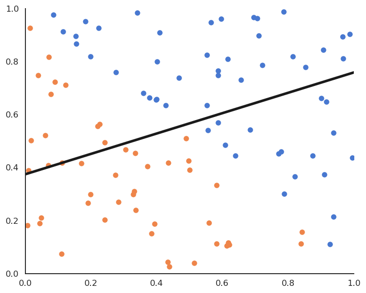
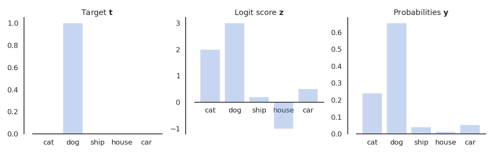
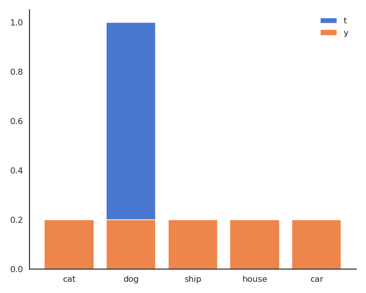

1 - Hard linear classification
Binary classification
The training data \mathcal{D} is composed of N examples (\mathbf{x}_i, t_i)_{i=1..N} , with a d-dimensional input vector \mathbf{x}_i \in \Re^d and a binary output t_i \in \{-1, +1\}
The data points where t = + 1 are called the positive class, the other the negative class.

Binary classification
- For example, the inputs \mathbf{x}_i can be images (one dimension per pixel) and the positive class corresponds to cats (t_i = +1), the negative class to dogs (t_i = -1).

Binary linear classification
- We want to find the hyperplane (\mathbf{w}, b) of \Re^d that correctly separates the two classes.

Binary linear classification
For a point \mathbf{x} \in \mathcal{D}, \langle \mathbf{w} \cdot \mathbf{x} \rangle +b is the projection of \mathbf{x} onto the hyperplane (\mathbf{w}, b).
If \langle \mathbf{w} \cdot \mathbf{x} \rangle +b > 0, the point is above the hyperplane.
If \langle \mathbf{w} \cdot \mathbf{x} \rangle +b < 0, the point is below the hyperplane.
If \langle \mathbf{w} \cdot \mathbf{x} \rangle +b = 0, the point is on the hyperplane.
By looking at the sign of \langle \mathbf{w} \cdot \mathbf{x} \rangle +b, we can predict the class of the input:
\text{sign}(\langle \mathbf{w} \cdot \mathbf{x} \rangle +b) = \begin{cases} +1 \; \text{if} \; \langle \mathbf{w} \cdot \mathbf{x} \rangle +b \geq 0 \\ -1 \; \text{if} \; \langle \mathbf{w} \cdot \mathbf{x} \rangle +b < 0 \\ \end{cases}
Binary linear classification
- Binary linear classification can be made by a single artificial neuron using the sign transfer function.
y = f_{\mathbf{w}, b} (\mathbf{x}) = \text{sign} ( \langle \mathbf{w} \cdot \mathbf{x} \rangle +b ) = \text{sign} ( \sum_{j=1}^d w_j \, x_j +b )
- \mathbf{w} is the weight vector and b is the bias.
Linearly separable datasets

Linear classification is the process of finding an hyperplane (\mathbf{w}, b) that correctly separates the two classes.
If such an hyperplane can be found, the training set is said linearly separable.
Otherwise, the problem is non-linearly separable and other methods have to be applied (MLP, SVM…).
Linear classification as an optimization problem
- The Perceptron algorithm tries to find the weights and biases minimizing the mean square error (mse) or quadratic loss:
\mathcal{L}(\mathbf{w}, b) = \mathbb{E}_\mathcal{D} [(t_i - y_i)^2] \approx \frac{1}{N} \, \sum_{i=1}^{N} (t_i - y_i)^2
When the prediction y_i is the same as the data t_i for all examples in the training set (perfect classification), the mse is minimal and equal to 0.
We can apply gradient descent to find this minimum.
\begin{cases}
\Delta \mathbf{w} = - \eta \, \nabla_\mathbf{w} \, \mathcal{L}(\mathbf{w}, b)\\
\\
\Delta b = - \eta \, \nabla_b \, \mathcal{L}(\mathbf{w}, b)\\
\end{cases}
Linear classification as an optimization problem
- Let’s search for the partial derivative of the quadratic error function with respect to the weight vector:
\nabla_\mathbf{w} \, \mathcal{L}(\mathbf{w}, b) = \nabla_\mathbf{w} \, \frac{1}{N} \, \sum_{i=1}^{N} (t_i - y_i )^2 = \frac{1}{N} \, \sum_{i=1}^{N} \nabla_\mathbf{w} \, (t_i - y_i )^2 = \frac{1}{N} \, \sum_{i=1}^{N} \nabla_\mathbf{w} \, \mathcal{l}_i (\mathbf{w}, b)
- Everything is similar to linear regression until we get:
\nabla_\mathbf{w} \, \mathcal{l}_i (\mathbf{w}, b) = - 2 \, (t_i - y_i) \, \nabla_\mathbf{w} \, \text{sign}( \langle \mathbf{w} \cdot \mathbf{x}_i \rangle +b)
- In order to continue with the chain rule, we would need to differentiate \text{sign}(x).
\nabla_\mathbf{w} \, \mathcal{l}_i (\mathbf{w}, b) = - 2 \, (t_i - y_i) \, \text{sign}'( \langle \mathbf{w} \cdot \mathbf{x}_i \rangle +b) \, \mathbf{x}_i
- But the sign function is not differentiable…
Linear classification as an optimization problem
- We will simply pretend that the sign() function is linear, with a derivative of 1:
\nabla_\mathbf{w} \, \mathcal{l}_i (\mathbf{w}, b) = - 2 \, (t_i - y_i) \, \mathbf{x}_i
- The update rule for the weight vector \mathbf{w} and the bias b is therefore the same as in linear regression:
\begin{cases}
\Delta \mathbf{w} = \eta \, \frac{1}{N} \, \sum_{i=1}^{N} (t_i - y_i) \, \mathbf{x}_i\\
\\
\Delta b = \eta \, \frac{1}{N} \, \sum_{i=1}^{N} (t_i - y_i )\\
\end{cases}
Batch version of linear classification
- By applying gradient descent on the quadratic error function, one obtains the following algorithm:
Batch linear classification
for M epochs:
\mathbf{dw} = 0 \qquad db = 0
for each sample (\mathbf{x}_i, t_i):
y_i = \text{sign}( \langle \mathbf{w} \cdot \mathbf{x}_i \rangle + b)
\mathbf{dw} = \mathbf{dw} + (t_i - y_i) \, \mathbf{x}_i
db = db + (t_i - y_i)
\Delta \mathbf{w} = \eta \, \frac{1}{N} \, \mathbf{dw}
\Delta b = \eta \, \frac{1}{N} \, db
This is called the batch version of the Perceptron algorithm.
If the data is linearly separable and \eta is well chosen, it converges to the minimum of the mean square error.
Linear classification: batch version

Linear classification: batch version

Online version of linear classification : the Perceptron algorithm
- The Perceptron algorithm was invented by the psychologist Frank Rosenblatt in 1958. It was the first algorithmic neural network able to learn linear classification.
This algorithm iterates over all examples of the training set and applies the delta learning rule to each of them immediately, not at the end on the whole training set.
One could check whether there are still classification errors on the training set at the end of each epoch and stop the algorithm.
The delta learning rule depends on the learning rate \eta, the error made by the prediction (t_i - y_i) and the input \mathbf{x}_i.
Linear classification: online version

Linear classification: online version

Batch vs. Online learning
- The mean square error is defined as the expectation over the data:
\mathcal{L}(\mathbf{w}, b) = \mathbb{E}_\mathcal{D} [(t_i - y_i)^2]
- Batch learning uses the whole training set as samples to estimate the mse:
\mathcal{L}(\mathbf{w}, b) \approx \frac{1}{N} \, \sum_{i=1}^{N} (t_i - y_i)^2
\Delta \mathbf{w} = \eta \, \frac{1}{N} \sum_{i=1}^{N} (t_i - y_i ) \, \mathbf{x_i}
- Online learning uses a single sample to estimate the mse:
\mathcal{L}(\mathbf{w}, b) \approx (t_i - y_i)^2
\Delta \mathbf{w} = \eta \, (t_i - y_i) \, \mathbf{x_i}
Batch learning has less bias (central limit theorem) and is less sensible to noise in the data, but is very slow.
Online learning converges faster, but can be instable and overfits (high variance).
Stochastic Gradient Descent - SGD
- In practice, we use a trade-off between batch and online learning called Stochastic Gradient Descent (SGD) or Minibatch Gradient Descent.
- The training set is randomly split at each epoch into small chunks of data (a minibatch, usually 32 or 64 examples) and the batch learning rule is applied on each chunk.
\Delta \mathbf{w} = \eta \, \frac{1}{K} \sum_{i=1}^{K} (t_i - y_i) \, \mathbf{x_i}
If the batch size is well chosen, SGD is as stable as batch learning and as fast as online learning.
The minibatches are randomly selected at each epoch (i.i.d).
- Online learning is a stochastic gradient descent with a batch size of 1.
2 - Maximum Likelihood Estimation
Maximum Likelihood Estimation
f(x ; \mu, \sigma) = \frac{1}{\sqrt{2\pi \sigma^2}} \, \exp{- \frac{(x - \mu)^2}{2\sigma^2}}
where \mu is the mean of the distribution and \sigma its standard deviation.
- The problem is to find the values of \mu and \sigma which explain best the observations \{x_i\}_{i=1}^N.
Maximum Likelihood Estimation
- The idea of MLE is to maximize the joint density function for all observations. This function is expressed by the likelihood function:
L(\mu, \sigma) = P( x ; \mu , \sigma ) = \prod_{i=1}^{N} f(x_i ; \mu, \sigma )
When the pdf takes high values for all samples, it is quite likely that the samples come from this particular distribution.
The likelihood function reflects the probability that the parameters \mu and \sigma explain the observations \{x_i\}_{i=1}^N.
Maximum Likelihood Estimation
- We therefore search for the values \mu and \sigma which maximize the likelihood function.
\text{max}_{\mu, \sigma} \quad L(\mu, \sigma) = \prod_{i=1}^{N} f(x_i ; \mu, \sigma )
- For the normal distribution, the likelihood function is:
\begin{aligned}
L(\mu, \sigma) & = \prod_{i=1}^{N} f(x_i ; \mu, \sigma ) \\
& = \prod_{i=1}^{N} \frac{1}{\sqrt{2\pi \sigma^2}} \, \exp{- \frac{(x_i - \mu)^2}{2\sigma^2}}\\
& = (\frac{1}{\sqrt{2\pi \sigma^2}})^N \, \prod_{i=1}^{N} \exp{- \frac{(x_i - \mu)^2}{2\sigma^2}}\\
& = (\frac{1}{\sqrt{2\pi \sigma^2}})^N \, \exp{- \frac{\sum_{i=1}^{N}(x_i - \mu)^2}{2\sigma^2}}\\
\end{aligned}
Maximum Likelihood Estimation
- To find the maximum of L(\mu, \sigma), we need to search where the gradient is equal to zero:
\begin{cases}
\dfrac{\partial L(\mu, \sigma)}{\partial \mu} = 0 \\
\dfrac{\partial L(\mu, \sigma)}{\partial \sigma} = 0 \\
\end{cases}
- The likelihood function is complex to differentiate, so we consider its logarithm l(\mu, \sigma) = \log(L(\mu, \sigma)) which has a maximum for the same value of (\mu, \sigma) as the log function is monotonic.
\begin{aligned}
l(\mu, \sigma) & = \log(L(\mu, \sigma)) \\
& = \log \left((\frac{1}{\sqrt{2\pi \sigma^2}})^N \, \exp{- \frac{\sum_{i=1}^{N}(x_i - \mu)^2}{2\sigma^2}} \right)\\
& = - \frac{N}{2} \log (2\pi \sigma^2) - \frac{\sum_{i=1}^{N}(x_i - \mu)^2}{2\sigma^2}\\
\end{aligned}
- l(\mu, \sigma) is called the log-likelihood function.
Maximum Likelihood Estimation
\begin{aligned}
l(\mu, \sigma) & = - \frac{N}{2} \log (2\pi \sigma^2) - \frac{\sum_{i=1}^{N}(x_i - \mu)^2}{2\sigma^2}\\
\end{aligned}
- The maximum of the log-likelihood function respects:
\begin{aligned}
\frac{\partial l(\mu, \sigma)}{\partial \mu} & = \frac{\sum_{i=1}^{N}(x_i - \mu)}{\sigma^2} = 0 \\
\frac{\partial l(\mu, \sigma)}{\partial \sigma} & = - \frac{N}{2} \frac{4 \pi \sigma}{2 \pi \sigma^2} + \frac{\sum_{i=1}^{N}(x_i - \mu)^2}{\sigma^3} \\
& = - \frac{N}{\sigma} + \frac{\sum_{i=1}^{N}(x_i - \mu)^2}{\sigma^3} = 0\\
\end{aligned}
\mu = \frac{1}{N} \sum_{i=1}^{N} x_i \qquad\qquad \sigma^2 = \frac{1}{N} \sum_{i=1}^{N}(x_i - \mu)^2
Maximum Likelihood Estimation
- Unsurprisingly, the mean and variance of the normal distribution which best explains the data are the mean and variance of the data…
\mu = \frac{1}{N} \sum_{i=1}^{N} x_i \qquad\qquad \sigma^2 = \frac{1}{N} \sum_{i=1}^{N}(x_i - \mu)^2
The same principle can be applied to estimate the parameters of any distribution: normal, exponential, Bernouilli, Poisson, etc…
When a machine learning method has an probabilistic interpretation (i.e. it outputs probabilities), MLE can be used to find its parameters.
One can use global optimization like here, or gradient descent to estimate the parameters iteratively.
3 - Soft linear classification : Logistic regression
Reminder: Logistic regression
- We want to perform a regression, but where the targets t_i are bounded betwen 0 and 1.

- We can use a logistic function instead of a linear function in order to transform the net activation into an output:
\begin{aligned}
y = \sigma(w \, x + b ) = \frac{1}{1+\exp(-w \, x - b )}
\end{aligned}
Use of logistic regression for soft classification
- Logistic regression can be used in binary classification if we consider y = \sigma(w \, x + b ) as the probability that the example belongs to the positive class (t=1).
P(t = 1 | x; w, b) = y ; \qquad P(t = 0 | x; w, b) = 1 - y
- The output t therefore comes from a Bernouilli distribution \mathcal{B} of parameter p = y = f_{w, b}(x). The probability density function (pdf) is:
f(t | x; w, b) = y^t \, (1- y)^{1-t}
If we consider our training samples (x_i, t_i) as independently taken from this distribution, our task is:
to find the parameterized distribution that best explains the data, which means:
to find the parameters w and b maximizing the likelihood that the samples t come from a Bernouilli distribution when x, w and b are given.
We only need to apply Maximum Likelihood Estimation (MLE) on this Bernouilli distribution!
MLE for logistic regression
- The likelihood function for logistic regression is :
\begin{aligned}
L( w, b) &= P( t | x; w, b ) = \prod_{i=1}^{N} f(t_i | x_i; w, b ) \\
&= \prod_{i=1}^{N} y_i^{t_i} \, (1- y_i)^{1-t_i}
\end{aligned}
- The likelihood function is quite hard to differentiate, so we take the log-likelihood function:
\begin{aligned}
l( w, b) &= \log L( w, b) \\
&= \sum_{i=1}^{N} [t_i \, \log y_i + (1 - t_i) \, \log( 1- y_i)]\\
\end{aligned}
- or even better: the negative log-likelihood which will be minimized using gradient descent:
\mathcal{L}( w, b) = - \sum_{i=1}^{N} [t_i \, \log y_i + (1 - t_i) \, \log( 1- y_i)]
MLE for logistic regression
- We then search for the minimum of the negative log-likelihood function by computing its gradient (here for a single sample):
\begin{aligned}
\frac{\partial \mathcal{l}_i(w, b)}{\partial w}
&= -\frac{\partial}{\partial w} [ t_i \, \log y_i + (1 - t_i) \, \log( 1- y_i) ] \\
&= - t_i \, \frac{\partial}{\partial w} \log y_i - (1 - t_i) \, \frac{\partial}{\partial w}\log( 1- y_i) \\
&= - t_i \, \frac{\frac{\partial}{\partial w} y_i}{y_i} - (1 - t_i) \, \frac{\frac{\partial}{\partial w}( 1- y_i)}{1- y_i} \\
&= - t_i \, \frac{y_i \, (1 - y_i) \, x_i}{y_i} + (1 - t_i) \, \frac{y_i \, (1-y_i) \, x_i}{1 - y_i}\\
&= - ( t_i - y_i ) \, x_i\\
\end{aligned}
- Same gradient as the linear perceptron, but with a non-linear output function!
Logistic regression for soft classification
- Logistic regression is a regression method used for classification. It uses a non-linear transfer function \sigma(x)=\frac{1}{1+\exp(-x)} applied on the net activation:
y_i = \sigma(\langle \mathbf{w} \cdot \mathbf{x}_i \rangle + b )
- The continuous output y is interpreted as the probability of belonging to the positive class.
P(t_i = 1 | \mathbf{x}_i; \mathbf{w}, b) = y_i ; \qquad P(t_i = 0 | \mathbf{x}_i; \mathbf{w}, b) = 1 - y_i
- We minimize the negative log-likelihood loss function using gradient descent:
\mathcal{L}(\mathbf{w}, b) = - \sum_{i=1}^{N} [t_i \, \log y_i + (1 - t_i) \, \log( 1- y_i)]
- We obtain the delta learning rule, using the class as a target and the probability as a prediction:
\begin{cases}
\Delta \mathbf{w} = \eta \, ( t_i - y_i ) \, \mathbf{x}_i \\
\\
\Delta b = \eta \, ( t_i - y_i ) \\
\end{cases}
Logistic regression
Logistic regression works just like linear classification, except in the way the prediction is done.
To know to which class \mathbf{x}_i belongs, simply draw a random number between 0 and 1:
if it is smaller than y_i (probability y_i), it belongs to the positive class.
if it is bigger than y_i (probability 1-y_i), it belongs to the negative class.
Alternatively, you can put a hard limit at 0.5:
Logistic regression

Logistic regression and confidence score
4 - Multi-class classification
Multi-class classification
- Can we perform multi-class classification using the previous methods when t \in \{A, B, C\} instead of t = +1 or -1?
Multi-class classification
Two main solutions:
If multiple classes are predicted for a single example, ones needs a confidence level for each classifier saying how sure it is of its prediction.
A majority vote is then performed to find the correct class.
Multi-class classification
- Example of One-vs-All classification: one binary classifier per class.

Softmax linear classifier
Suppose we have C classes (dog vs. cat vs. ship vs…).
The One-vs-All scheme involves C binary classifiers (\mathbf{w}_i, b_i), each with a weight vector and a bias, working on the same input \mathbf{x}.
y_i = f(\langle \mathbf{w}_i \cdot \mathbf{x} \rangle + b_i)
- Putting all neurons together, we obtain a linear perceptron similar to multiple linear regression:
\mathbf{y} = f(W \times \mathbf{x} + \mathbf{b})
- The C weight vectors form a d\times C weight matrix W, the biases form a vector \mathbf{b}.
Softmax linear classifier

- The net activations form a vector \mathbf{z}:
\mathbf{z} = f_{W, \mathbf{b}}(\mathbf{x}) = W \times \mathbf{x} + \mathbf{b}
Each element z_j of the vector \mathbf{z} is called the logit score of the class:
- the higher the score, the more likely the input belongs to this class.
The logit scores are not probabilities, as they can be negative and do not sum to 1.
One-hot encoding
\mathbf{t} = [\text{cat}, \text{dog}, \text{ship}, \text{house}, \text{car}] = [0, 1, 0, 0, 0]
One-hot encoding
The labels can be seen as a probability distribution over the training set, in this case a multinomial distribution (a dice with C sides).
For a given image \mathbf{x} (e.g. a picture of a dog), the conditional pmf is defined by the one-hot encoded vector \mathbf{t}:
P(\mathbf{t} | \mathbf{x}) = [P(\text{cat}| \mathbf{x}), P(\text{dog}| \mathbf{x}), P(\text{ship}| \mathbf{x}), P(\text{house}| \mathbf{x}), P(\text{car}| \mathbf{x})] = [0, 1, 0, 0, 0]

- We need to transform the logit score \mathbf{z} into a probability distribution P(\mathbf{y} | \mathbf{x}) that should be as close as possible from P(\mathbf{t} | \mathbf{x}).
Softmax linear classifier
- The softmax operator makes sure that the sum of the outputs \mathbf{y} = \{y_i\} over all classes is 1.
y_j = P(\text{class = j} | \mathbf{x}) = \mathcal{S}(z_j) = \frac{\exp(z_j)}{\sum_k \exp(z_k)}

The higher z_j, the higher the probability that the example belongs to class j.
This is very similar to logistic regression for soft classification, except that we have multiple classes.
Cross-entropy loss function
- We cannot use the mse as a loss function, as the softmax function would be hard to differentiate:
\text{mse}(W, \mathbf{b}) = \sum_j (t_{j} - \frac{\exp(z_j)}{\sum_k \exp(z_k)})^2
We actually want to minimize the statistical distance netween two distributions:
The model outputs a multinomial probability distribution \mathbf{y} for an input \mathbf{x}: P(\mathbf{y} | \mathbf{x}; W, \mathbf{b}).
The one-hot encoded classes also come from a multinomial probability distribution P(\mathbf{t} | \mathbf{x}).
We search which parameters (W, \mathbf{b}) make the two distributions P(\mathbf{y} | \mathbf{x}; W, \mathbf{b}) and P(\mathbf{t} | \mathbf{x}) close.
Cross-entropy loss function
The training data \{\mathbf{x}_i, \mathbf{t}_i\} represents samples from P(\mathbf{t} | \mathbf{x}).
P(\mathbf{y} | \mathbf{x}; W, \mathbf{b}) is a good model of the data when the two distributions are close, i.e. when the negative log-likelihood of each sample under the model is small.

- For an input \mathbf{x}, we minimize the cross-entropy between the target distribution and the predicted outputs:
\mathcal{l}(W, \mathbf{b}) = \mathcal{H}(\mathbf{t} | \mathbf{x}, \mathbf{y} | \mathbf{x}) = \mathbb{E}_{t \sim P(\mathbf{t} | \mathbf{x})} [ - \log P(\mathbf{y} = t | \mathbf{x})]
Cross-entropy and negative log-likelihood
- The cross-entropy samples from \mathbf{t} | \mathbf{x}:
\mathcal{l}(W, \mathbf{b}) = \mathcal{H}(\mathbf{t} | \mathbf{x}, \mathbf{y} | \mathbf{x}) = \mathbb{E}_{t \sim P(\mathbf{t} | \mathbf{x})} [ - \log P(\mathbf{y} = t | \mathbf{x})]
- For a given input \mathbf{x}, \mathbf{t} is non-zero only for the correct class t^*, as \mathbf{t} is a one-hot encoded vector [0, 1, 0, 0, 0]:
\mathcal{l}(W, \mathbf{b}) = - \log P(\mathbf{y} = t^* | \mathbf{x})
- If we note j^* the index of the correct class t^*, the cross entropy is simply:
\mathcal{l}(W, \mathbf{b}) = - \log y_{j^*}
Cross-entropy and negative log-likelihood
- As only one element of \mathbf{t} is non-zero, the cross-entropy is the same as the negative log-likelihood of the prediction for the true label:
\mathcal{l}(W, \mathbf{b}) = - \log y_{j^*}
The minimum of - \log y is obtained when y =1:
- We want to classifier to output a probability 1 for the true label.
Because of the softmax activation function, the probability for the other classes should become closer from 0.
y_j = P(\text{class = j}) = \frac{\exp(z_j)}{\sum_k \exp(z_k)}
- Minimizing the cross-entropy / negative log-likelihood pushes the output distribution \mathbf{y} | \mathbf{x} to be as close as possible to the target distribution \mathbf{t} | \mathbf{x}.
Cross-entropy loss function

Cross-entropy loss function
- As \mathbf{t} is a binary vector [0, 1, 0, 0, 0], the cross-entropy / negative log-likelihood can also be noted as the dot product between \mathbf{t} and \log \mathbf{y}:
\mathcal{l}(W, \mathbf{b}) = - \langle \mathbf{t} \cdot \log \mathbf{y} \rangle = - \sum_{j=1}^C t_j \, \log y_j = - \log y_{j^*}
- The cross-entropy loss function is then the expectation over the training set of the individual cross-entropies:
\mathcal{L}(W, \mathbf{b}) = \mathbb{E}_{\mathbf{x}, \mathbf{t} \sim \mathcal{D}} [- \langle \mathbf{t} \cdot \log \mathbf{y} \rangle ] \approx \frac{1}{N} \sum_{i=1}^N - \langle \mathbf{t}_i \cdot \log \mathbf{y}_i \rangle
Cross-entropy loss function
- The nice thing with the cross-entropy loss function, when used on a softmax activation function, is that the partial derivative w.r.t the logit score \mathbf{z} is simple:
\begin{split}
\frac{\partial {l}(W, \mathbf{b})}{\partial z_i} & = - \sum_j \frac{\partial}{\partial z_i} t_j \log(y_j)=
- \sum_j t_j \frac{\partial \log(y_j)}{\partial z_i} = - \sum_j t_j \frac{1}{y_j} \frac{\partial y_j}{\partial z_i} \\
& = - \frac{t_i}{y_i} \frac{\partial y_i}{\partial z_i} - \sum_{j \neq i}^C \frac{t_j}{y_j} \frac{\partial y_j}{\partial z_i}
= - \frac{t_i}{y_i} y_i (1-y_i) - \sum_{j \neq i}^C \frac{t_j}{y_i} (-y_j \, y_i) \\
& = - t_i + t_i \, y_i + \sum_{j \neq i}^C t_j \, y_i = - t_i + \sum_{j = 1}^C t_j y_i
= -t_i + y_i \sum_{j = 1}^C t_j \\
& = - (t_i - y_i)
\end{split}
i.e. the same as with the mse in linear regression!
\frac{\partial \mathcal{l}(W, \mathbf{b})}{\partial \mathbf{z}} = - (\mathbf{t} - \mathbf{y} )
Cross-entropy loss function
\mathbf{z} = W \times \mathbf{x} + \mathbf{b}
we can obtain the partial derivatives:
\begin{cases}
\dfrac{\partial \mathcal{l}(W, \mathbf{b})}{\partial W} = \dfrac{\partial \mathcal{l}(W, \mathbf{b})}{\partial \mathbf{z}} \times \dfrac{\partial \mathbf{z}}{\partial W} = - (\mathbf{t} - \mathbf{y} ) \times \mathbf{x}^T \\
\\
\dfrac{\partial \mathcal{l}(W, \mathbf{b})}{\partial \mathbf{b}} = \dfrac{\partial \mathcal{l}(W, \mathbf{b})}{\partial \mathbf{z}} \times \dfrac{\partial \mathbf{z}}{\partial \mathbf{b}} = - (\mathbf{t} - \mathbf{y} ) \\
\end{cases}
- So gradient descent leads to the delta learning rule:
\begin{cases}
\Delta W = \eta \, (\mathbf{t} - \mathbf{y} ) \times \mathbf{x}^T \\
\\
\Delta \mathbf{b} = \eta \, (\mathbf{t} - \mathbf{y} ) \\
\end{cases}
Softmax linear classifier
- We first compute the logit scores \mathbf{z} using a linear layer:
\mathbf{z} = W \times \mathbf{x} + \mathbf{b}
- We turn them into probabilities \mathbf{y} using the softmax activation function:
y_j = \frac{\exp(z_j)}{\sum_k \exp(z_k)}
- We minimize the cross-entropy / negative log-likelihood on the training set:
\mathcal{L}(W, \mathbf{b}) = \mathbb{E}_{\mathbf{x}, \mathbf{t} \sim \mathcal{D}} [ - \langle \mathbf{t} \cdot \log \mathbf{y} \rangle]
which simplifies into the delta learning rule:
\begin{cases}
\Delta W = \eta \, (\mathbf{t} - \mathbf{y} ) \times \mathbf{x}^T \\
\\
\Delta \mathbf{b} = \eta \, (\mathbf{t} - \mathbf{y} ) \\
\end{cases}
Comparison of linear classification and regression
Classification and regression differ in the nature of their outputs: in classification they are discrete, in regression they are continuous values.
However, when trying to minimize the mismatch between a model \mathbf{y} and the real data \mathbf{t}, we have found the same delta learning rule:
\begin{cases}
\Delta W = \eta \, (\mathbf{t} - \mathbf{y} ) \times \mathbf{x}^T \\
\\
\Delta \mathbf{b} = \eta \, (\mathbf{t} - \mathbf{y} ) \\
\end{cases}
Regression and classification are in the end the same problem for us. The only things that needs to be adapted is the activation function of the output and the loss function:
- For regression, we use regular activation functions and the mean square error (mse):
\mathcal{L}(W, \mathbf{b}) = \mathbb{E}_{\mathbf{x}, \mathbf{t} \in \mathcal{D}} [ ||\mathbf{t} - \mathbf{y}||^2 ]
- For classification, we use the softmax activation function and the cross-entropy (negative log-likelihood) loss function:
\mathcal{L}(W, \mathbf{b}) = \mathbb{E}_{\mathbf{x}, \mathbf{t} \sim \mathcal{D}} [ - \langle \mathbf{t} \cdot \log \mathbf{y} \rangle]
5 - Multi-label classification
Multi-label classification
\mathbf{t} = [\text{cat}, \text{dog}, \text{ship}, \text{house}, \text{car}] = [1, 1, 0, 0, 0]
- Normalizing the vector does not help: it is not a dog or a cat, it is a dog and a cat.
\mathbf{t} = [\text{cat}, \text{dog}, \text{ship}, \text{house}, \text{car}] = [0.5, 0.5, 0, 0, 0]
Multi-label classification
- For multi-label classification, we can simply use the logistic activation function for the output neurons:
\mathbf{y} = \sigma(W \times \mathbf{x} + \mathbf{b})
- The outputs are between 0 and 1, but they do not sum to one. Each output neuron performs logistic regression for soft classification on their class:
y_j = P(\text{class} = j | \mathbf{x})
- Each output neuron y_j has a binary target t_j (one-vs-the-rest) and has to minimize the negative log-likelihood:
\mathcal{l}_j(W, \mathbf{b}) = - t_j \, \log y_j + (1 - t_j) \, \log( 1- y_j)
- The binary cross-entropy loss is the sum of the negative log-likelihood for each class:
\mathcal{L}(W, \mathbf{b}) = \mathbb{E}_{\mathcal{D}} [- \sum_{j=1}^C t_j \, \log y_j + (1 - t_j) \, \log( 1- y_j)]